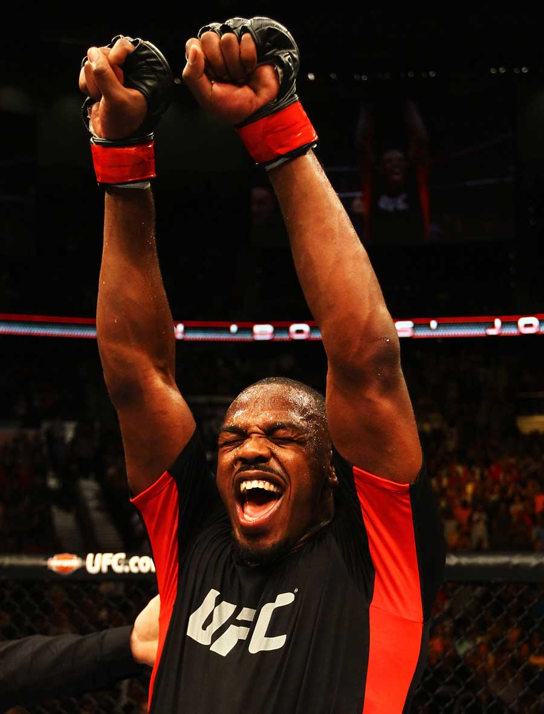

UFC 145: Jon Jones puts a beating on Rashad Evans

by Dr. Octagon, J.D.
After making a lot of noise about how he really didn’t like Jon Jones (above), Rashad Evans did not show it last night, losing a lopsided decision at UFC 145 in Atlanta, Ga.
Evans looked like he didn’t want to engage at all in the fourth and fifth rounds. Jones opened up a large hematoma on his forehead, which Evans was forced to guard with his hand constantly. While Jones couldn’t finish the fight, he was never in real trouble. Jones threw a wide variety of strikes, but the shot that really won it for him was the standing elbow, which he delivered with amazing precision.
Surprisingly, Rashad didn’t try to take the fight to the ground at all. I gave Rashad more of a chance than most in this fight, but he didn’t have much of a game plan. Evans was flabbergasted by Jones’ reach and not interested in taking any risks to try and close the distance. The result was probably the most boring Jon Jones fight in a while, but par for the course from Rashad lately.
The final verdict was Jones taking an easy decision 50-45 and 49-46 (twice), putting him one step closer to cleaning out the light heavyweight division. Dan Henderson is next up, and while Dan always puts up a good fight, he’s much much smaller than Jon Jones. Jones is a freakishly long light heavyweight, whereas Henderson has fought at middleweight. However, Henderson has also fought at barely-heavyweight. That fight could happen soon. I don’t think Jones needs much preparation, other than some work on his haymaker-evasion techniques.
On the undercard, Rory MacDonald put a ground-and-pound beating on Che Mills for two rounds before winning by TKO at 2:20 of Round 2. The 22-year-old Canuck looked great and I can’t wait to see his next fight.
Big Ben Rothwell knocked out a reckless Brendan Schaub, after Shaub rushed in swinging wildly and caught a left to the face from the larger man. Shaub was knocked out at 1:10 of the first. Big Ben said after the fight that a loss would have meant his retirement, having already fought many top heavyweights over his career of more than a decade. Of course, there will always be work for a guy of his size with knockout power.
Michael McDonald knocked out Miguel Angel Torres with an uppercut in the first round. Torres has been a shadow of his former self ever since he was knocked out by Brian Bowles, and needed help to leave the octagon. When asked for comment after the fight, McDonald said, “You don’t know me, but I’m your brother. I was raised here in this living hell.” It didn’t make much sense, but his voice was exceptionally soulful.
Finally, Eddie Yagin edged Mark Hominick in a split decision. The result was correct in our view, as Yagin rocked Hominick in both of the first two rounds. But Hominick showed a ton of heart by coming forward, despite cuts in both his eyes and a swollen, busted-up face.
Pretty good card overall, despite a lackluster main event.